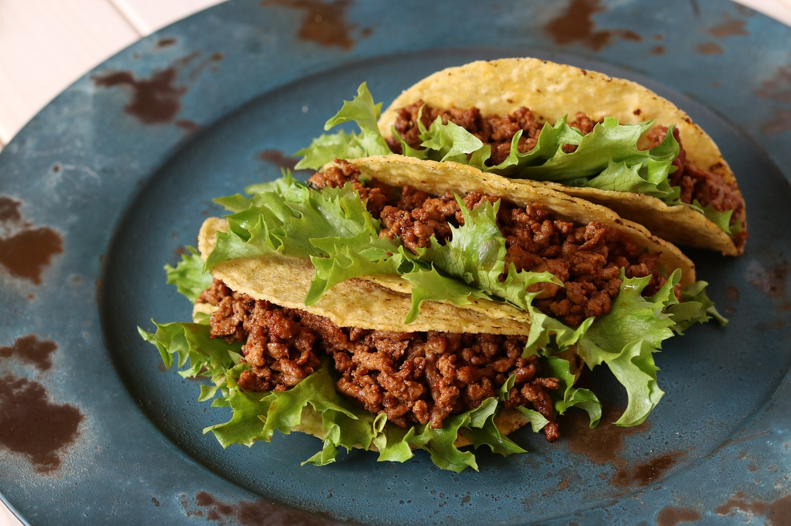

Mexican Birria Tacos Recipe

Description
Mexican birria tacos, Jalisco-style, made with braised beef that's slow-cooked in a fragrant 3-chile sauce with a delicious spice mix.
Crispy tacos, and tender, mouth-watering beef team up with melted Mexican cheese in this impressive meal.
This recipe takes a little time but it's so worth it!
Ingredients
- Sauce
- 6 dried guajillo chile peppers, seeded
- 2 dried ancho chiles, stemmed and seeded
- 1 tablespoon olive oil, or as needed
- 4 medium Roma tomatoes
- 2 tablespoons white vinegar
- 2 cloves garlic
- 2 teaspoons ground black pepper
- 4 whole cloves
- 1 pinch ground cinnamon
- 1 pinch ground cumin
- 1 pinch ground thyme
- 1 pinch dried marjoram
- 1 pinch dried oregano
- 1 pinch salt
- Meat
- 4 pounds beef chuck roast
- salt and freshly ground black pepper to taste
- Tacos
- 18 corn tortillas
- 1 large white onion, finely chopped
- 1 bunch fresh cilantro chopped
- 1 cup shredded queso asadero (white Mexican cheese), optional
Steps
Here are the steps to make the best Mexican birria tacos you will ever taste!
- Step 1: Gather all ingredients. Preheat the oven to 325 degrees F (165 degrees C). Fill a pot with water and bring to a boil
- Step 2: Start the sauce: Add guajillo, arbol, and ancho chile peppers to the boiling water; boil for 5 minutes
- Step 3: Remove pot from the heat and allow peppers to soak until cool. Drain, reserving 1/4 cup of the cooking water
- Step 4: Meanwhile, sear the meat: Rinse beef and pat dry with paper towels. Cut beef into chunks if desired, and season with salt and pepper
- Step 5: Heat oil in a Dutch oven over medium-high heat. Add beef and cook until browned on all sides, about 10 minutes. Remove from the heat
- Step 6: While the beef is searing, continue the sauce: Line a heavy cast-iron grill pan or griddle with aluminum foil and place over high heat.
Arrange tomatoes in a single layer on top. Grill until tomato skin is burned on all sides and begins to peel, 3 to 5 minutes
- Step 7: Place cooled chile peppers into a blender.
Add grilled tomatoes, vinegar, garlic, 2 teaspoons black pepper, cloves, cinnamon, cumin, thyme, marjoram, oregano, and salt in a blender.
Pour in the reserved 1/4 cup of chile water and blend until smooth
- Step 8: Strain chile sauce through a mesh strainer and pour over browned meat in the Dutch oven, turning the roast so it is completely covered with sauce; cover with a lid
- Step 9: Bake in the preheated oven, basting meat every 45 minutes with sauce, until birria begins to fall apart, 3 to 4 hours.
Remove the lid and bake, uncovered, until birria is crispy on top, about 20 minutes. Remove from oven, cover with 2 layers of aluminum foil, and allow to rest in a warm area for 10 minutes
- Step 10: Remove meat to a cutting board and strain off any fat from the sauce. Shred meat with two forks, then return meat to the pot and stir with the sauce to combine
- Step 11: Assemble and heat tacos: Fill each tortilla with birria and top with Mexican cheese, chopped onion, and cilantro.
Warm tortillas on a griddle, flipping until both sides are crispy and cheese is melted
- Step 12: Serve with extra sauce on the side for dipping and enjoy!
Homepage